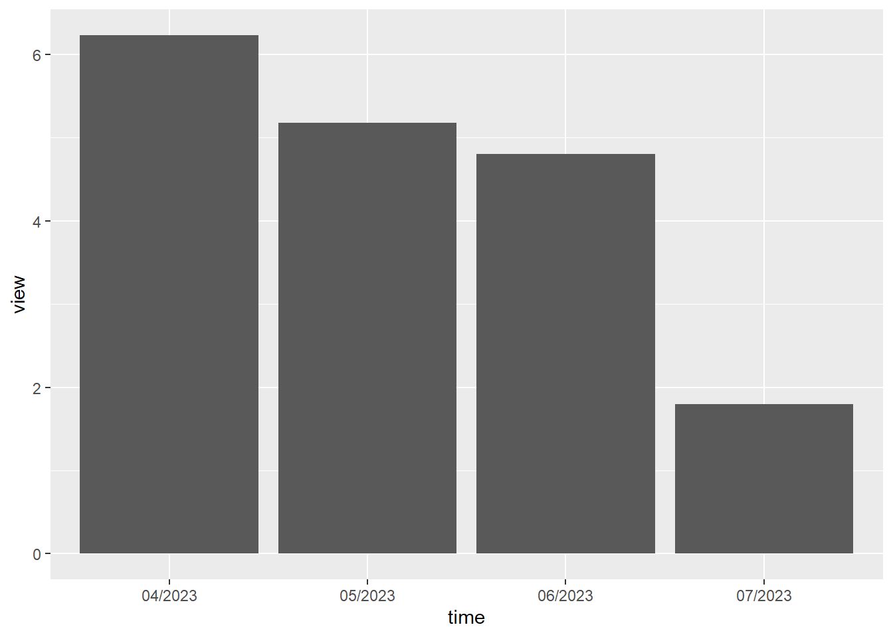
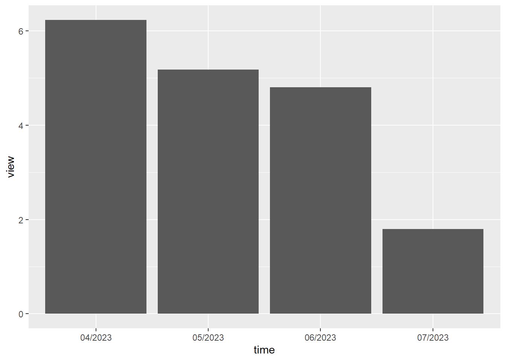
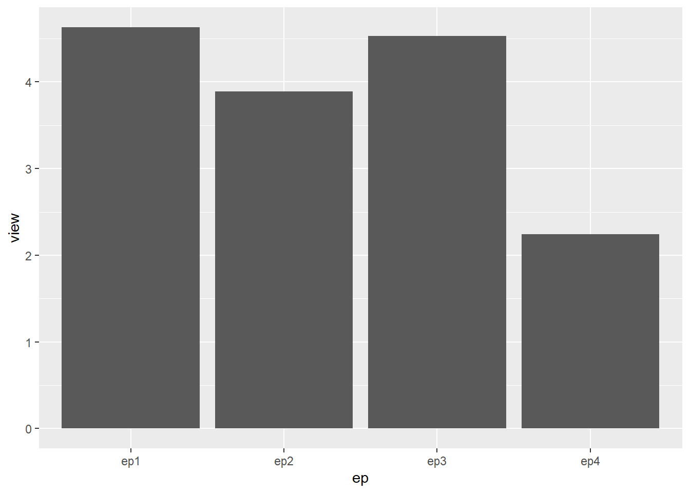

library(ggplot2)
time <- c('04/2023', '05/2023', '06/2023', '07/2023')
view <- c(6.23, 5.18, 4.8, 1.8)
df1 <- data.frame(time, view)
ggplot(df1, aes(x = time, y = view)) +
geom_bar(stat = "identity")
This series is good!
Beef is a 2023 American dark comedy drama miniseries created by Korean director Lee Sung Jin for Netflix. It stars Steven Yeun and Ali Wong as Danny Cho and Amy Lau, two people whose involvement in a road rage incident pits them against each other. Appearing in supporting roles are Joseph Lee, Young Mazino, David Choe, and Patti Yasutake.
All episodes for Beef were released on Netflix on April 6, 2023, to acclaim from critics who praised Yeun and Wong’s performances, as well as the writing and directing.

Ep1: 4.63 millions
Ep2: 3.89 millions
Ep3: 4.53 millions
Ep4: 2.24 millions
library(ggplot2)
time <- c('04/2023', '05/2023', '06/2023', '07/2023')
view <- c(6.23, 5.18, 4.8, 1.8)
df1 <- data.frame(time, view)
ggplot(df1, aes(x = time, y = view)) +
geom_bar(stat = "identity")
ep <- c('ep1', 'ep2', 'ep3', 'ep4')
view <- c(4.63, 3.89, 4.53, 2.24)
df2 <- data.frame(time, view)
ggplot(df2, aes(x = ep, y = view)) +
geom_bar(stat = "identity")
In the first 3 episodes, the view are around 4 millions, but after that, it drops to 2.24 millions in episode 4.
Also, people are more interested in the first 3 months after the show is launched but after that, the number drop to less than half of month before.